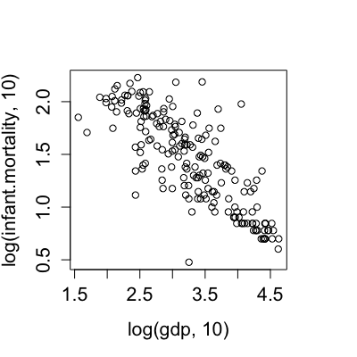
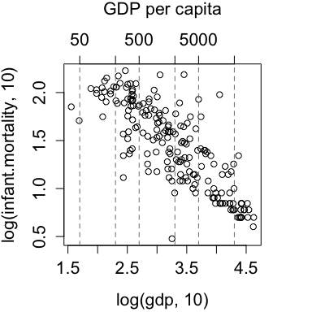
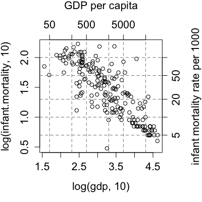
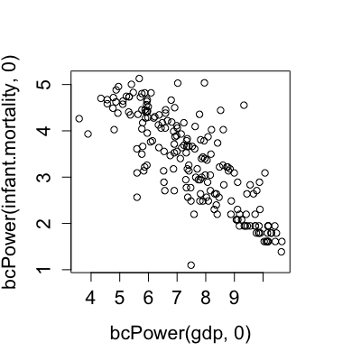
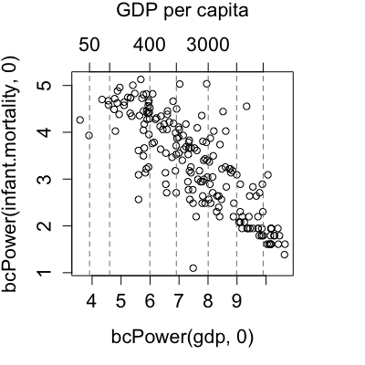
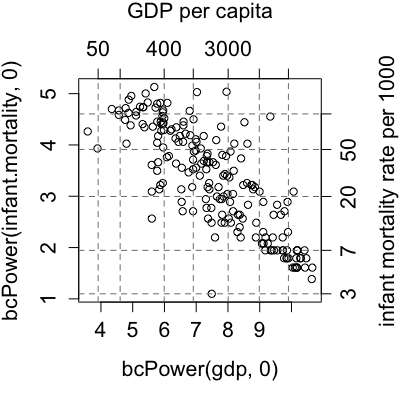
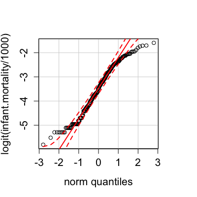
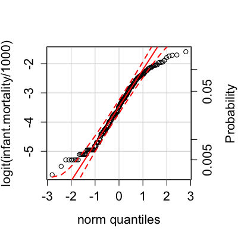
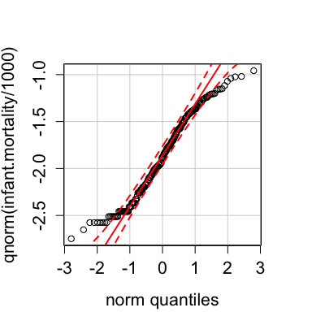
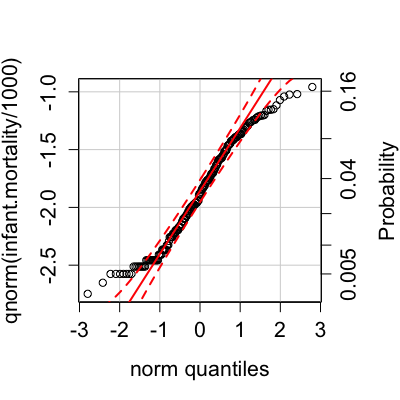

basicPowerAxis(power, base = exp(1), side = c("right", "above", "left", "below"), at, start = 0, lead.digits = 1, n.ticks, grid = FALSE, grid.col = gray(0.5), grid.lty = 2, axis.title = "Untransformed Data", cex = 1, las = par("las")) bcPowerAxis(power, side = c("right", "above", "left", "below"), at, start = 0, lead.digits = 1, n.ticks, grid = FALSE, grid.col = gray(0.5), grid.lty = 2, axis.title = "Untransformed Data", cex = 1, las = par("las")) yjPowerAxis(power, side = c("right", "above", "left", "below"), at, lead.digits = 1, n.ticks, grid = FALSE, grid.col = gray(0.5), grid.lty = 2, axis.title = "Untransformed Data", cex = 1, las = par("las")) probabilityAxis(scale = c("logit", "probit"), side = c("right", "above", "left", "below"), at, lead.digits = 1, grid = FALSE, grid.lty = 2, grid.col = gray(0.5), axis.title = "Probability", interval = 0.1, cex = 1, las = par("las"))
"logit"
(the default) or "probit".side = 1 for the bottom of the plot,
side=2 for the left side,
side = 3 for the top, side = 4 for the right side.1.TRUE grid lines for the axis will be drawn.0, ticks labels are drawn parallel to the
axis; set to 1 for horizontal labels (see par).power.axis
when power = 0.These functions produce axes for the original scale of
transformed variables. Typically these would appear as additional
axes to the right or
at the top of the plot, but if the plot is produced with
axes=FALSE, then these functions could be used for axes below or to
the left of the plot as well.
The transformations corresponding to the three functions are as follows:
basicPowerAxis:Simple power transformation,
x' = x^p for p != 0
and x' = log x for p = 0.
bcPowerAxis:Box-Cox power transformation,
x' = (x^p - 1)/p
for x != 0 and x' = log(x)
for p = 0.
yjPowerAxis:Yeo-Johnson power transformation,
for non-negative x, the Box-Cox transformation of
x + 1; for negative x, the Box-Cox transformation of
|x| + 1 with power 2 - p.
probabilityAxis:logit or probit transformation,
logit = log[p/(1 - p)], or
probit = Phi^-1(p), where Phi^-1 is the
standard-normal quantile function.
These functions will try to place tick marks at reasonable locations, but
producing a good-looking graph sometimes requires some fiddling with the
at argument.
These functions are used for their side effects: to draw axes.
Fox, J. and Weisberg, S. (2011) An R Companion to Applied Regression, Second Edition, Sage.
UN <- na.omit(UN) par(mar=c(5, 4, 4, 4) + 0.1) # leave space on right with(UN, plot(log(gdp, 10), log(infant.mortality, 10)))
basicPowerAxis(0, base=10, side="above", at=c(50, 200, 500, 2000, 5000, 20000), grid=TRUE, axis.title="GDP per capita")
basicPowerAxis(0, base=10, side="right", at=c(5, 10, 20, 50, 100), grid=TRUE, axis.title="infant mortality rate per 1000")






